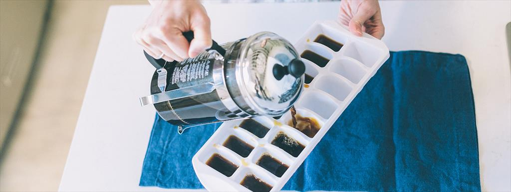

Receta para Cubos de hielo de Café - El secreto para mantener intenso tu café helado
Con la llegada del verano recibimos al momento ideal para disfrutar de un café helado. ¿Un consejo simple para obtener el máximo provecho de tu café? Hacer que tus cubos de hielo sean de café. Cuando se vierte el café caliente sobre los cubos de hielo regulares, diluyen y suavizan el sabor a medida que se derriten pero con los cubos de café se obtiene el sabor completo hasta la última gota.
(1) Preparar 16 oz (473ml) de café y dejarlo enfriar.